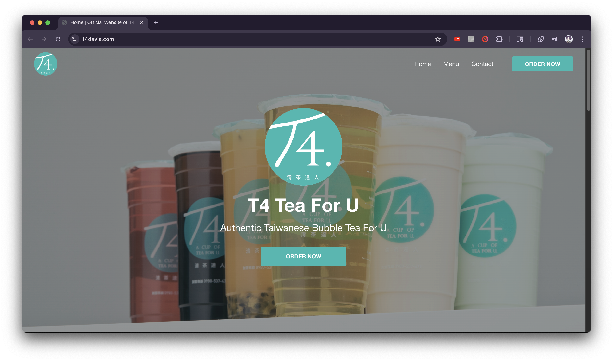
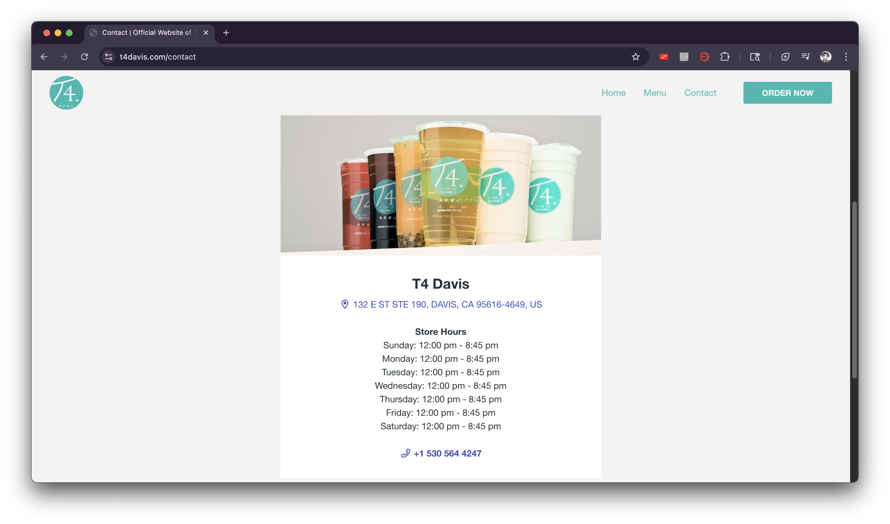
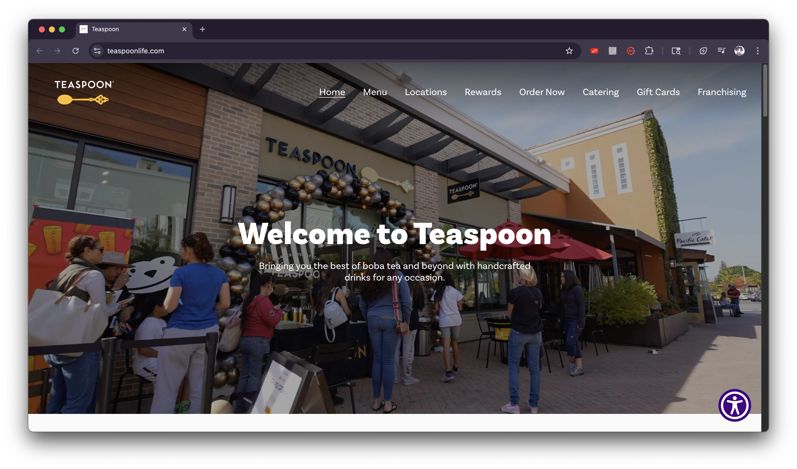
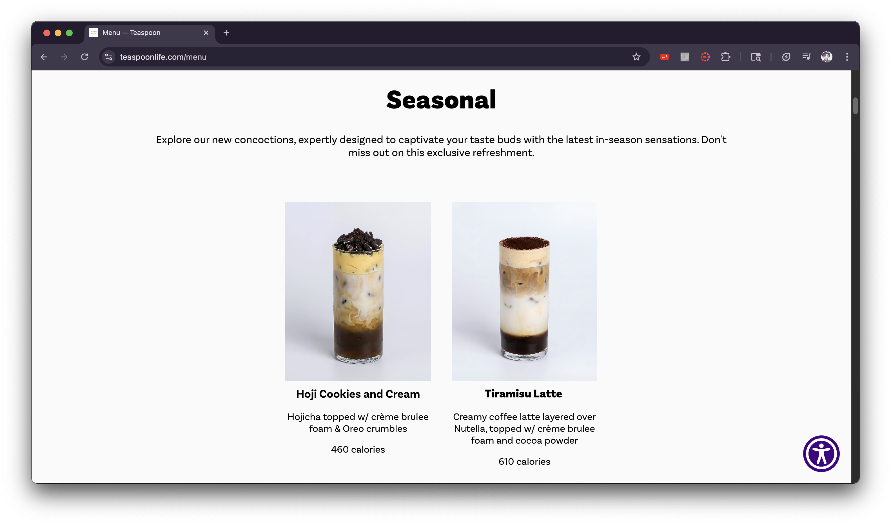
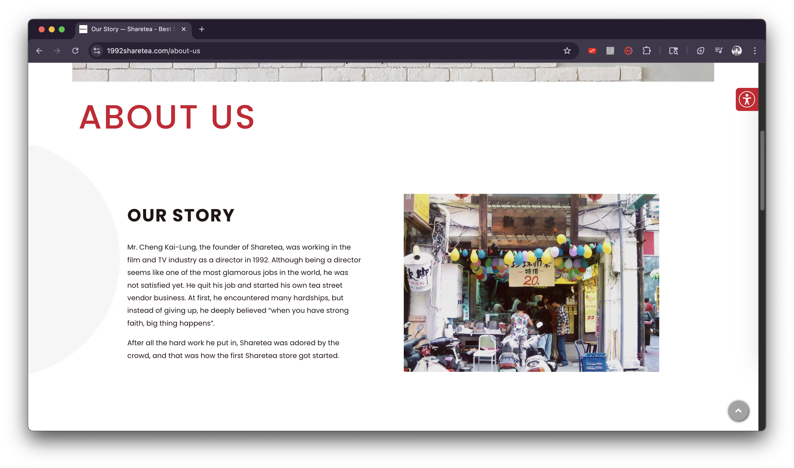
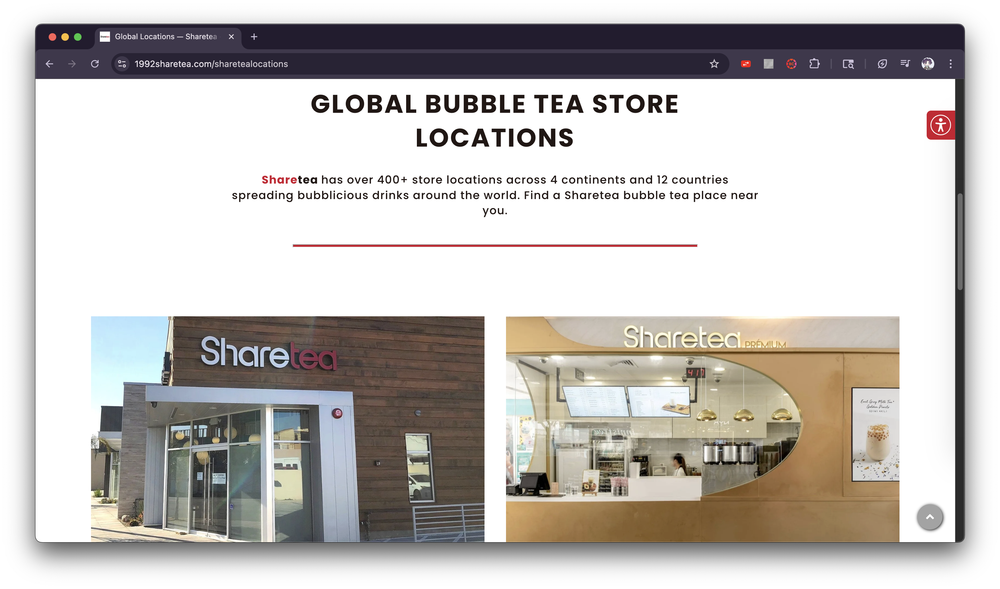

Bee With Tea
Never go without your favorite milk tea wherever you are in the world! Bee With Tea simplifies your beloved drinks into easy receipes you can make at home. We also have a small shop in person that sells the drinks we have online. Affordable, accessible, and quick for any time, any day.
Teenagers, college students, and young adults.
Teenagers, college students, and young adults are the main demographic that consumes sugary drinks like boba, lattes, frappuccinos and so on. Opening a shop that sells those drinks would fulfill their sugar cravings or as a treat to get through a long day at school or work. Also, having a website dedicated to showing customers our store and to share drink receipes can help reduce the money and plastic they spend and use, and have better access to a tasty drink in the comforts of their own home.






Welcome to Bee With You! Fun, flavorful drinks since 2020 from your local shop or at home anytime! Explore our page to find tasty recipes and find where we are located to support us!
[Small café with an outside, sunny view with tables and chairs]
Bee With Tea was founded in 2020 during the COVID pandemic when Bee was on their boba tea craze. Because of the quaratine period, Bee decided to try to start making drinks with ingredients at home. Slowly but surely as the world began to open back up, the list of drink recipes that compiled over the course of a year turned into a small local shop for everyone to enjoy the comforts of a tasty, homemade drink on the go! Bee With Tea also has a website dedicated to serve their customers even at home. The recipes are listed online with substitutions for any restrictions.
[Matcha latte in a glass cup with a metal straw]
A nutty and delicious latte with black sesame paste, soy milk, and maple syrup. Served hot or cold
$5.00
A delicious counterpart to its matcha latte sibling that combines rich, roasted green tea powder, oat milk, and agave syrup. Served hot or cold
$5.00
A vibrant, flavorful latte that took the world by storm with Japanese green tea powder, oat milk, and agave syrup. Served hot or cold
$5.00
A classic Hong Kong local favorite that has black tea mixed with evaporated milk! Served hot or cold
$4.50
One of the most popular milk tea sold across the world made by combining deep, toasty roasted oolong tea, sugar syrup, milk powder, and if desired, an additional topping of tapioca pearls for $0.50 more! Served hot (no pearls option) or cold
$5.00
A sweet, creamy and velvety smoothie with avocado, condensed milk and coconut milk
$6.50
A refreshing, tropical smoothie includes frozen mango, plain yogurt, honey, and almond milk
$6.50
A bright and snappy smoothie filled with persimmons, honey, and coconut milk
$6.50
[5 different types of the most popular drinks in different glasses next to each other in a line]
Our small shop is located in Serramonte Center, Daly City! We open on weekdays from 10am - 8pm and weekends are from 10am - 10pm. Contact us via 415-067-2357 or email us at beewithtea@gmail.com
[Outside view of Serramonte center's mall buildings]